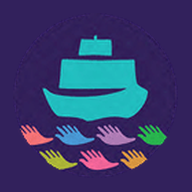

FOHMS Volunteer Portal
One place for everything you do as a FOHMS volunteer: your shifts, your to-dos, claiming back what you spend, and running events. Sign in with your email address. There's no password.

The Volunteer Portal works on any computer, and best of all on your phone, added to your home screen.
Add it to your home screen
iPhone or iPad (Safari)
- Open the Volunteer Portal (the gold button above).
- Tap the Share button (the square with an arrow).
- Tap Add to Home Screen, then Add.
Android (Chrome)
- Open the Volunteer Portal (the gold button above).
- Tap Install when it's offered, or the ⋮ menu, then Add to Home screen.
The first time, sign in with the 6-digit code from the email we send you. In the app you stay signed in for 30 days.
What you can do
Help at events
Pick a shift, see your stall and who's helping, and let the lead know if you can't make it.
Claim back what you spend
Photograph the receipt and your lead approves it. FOHMS card holders add their receipts here too.
Run events and initiatives
For leads and the events team: stalls, rotas, kit, floats and approvals.
Meetings and the committee
Dates, agendas and minutes, and who's on the committee. Everyone's welcome.
Signing in
- Use the email address FOHMS has for you. We email you a 6-digit code (and, in a browser, a link) that works once.
- Tick Keep me signed in and you stay signed in on that phone or computer for 30 days.
- Got a fohms.co.uk Google account? You can sign in with that instead.
- New to FOHMS? Tap Join as a volunteer on the sign-in page. You can take shifts straight away, and see more once a lead has welcomed you.
- No email? Check your junk folder, and that it's the same address as before.
- Changed your email? Update it yourself in the portal under More.